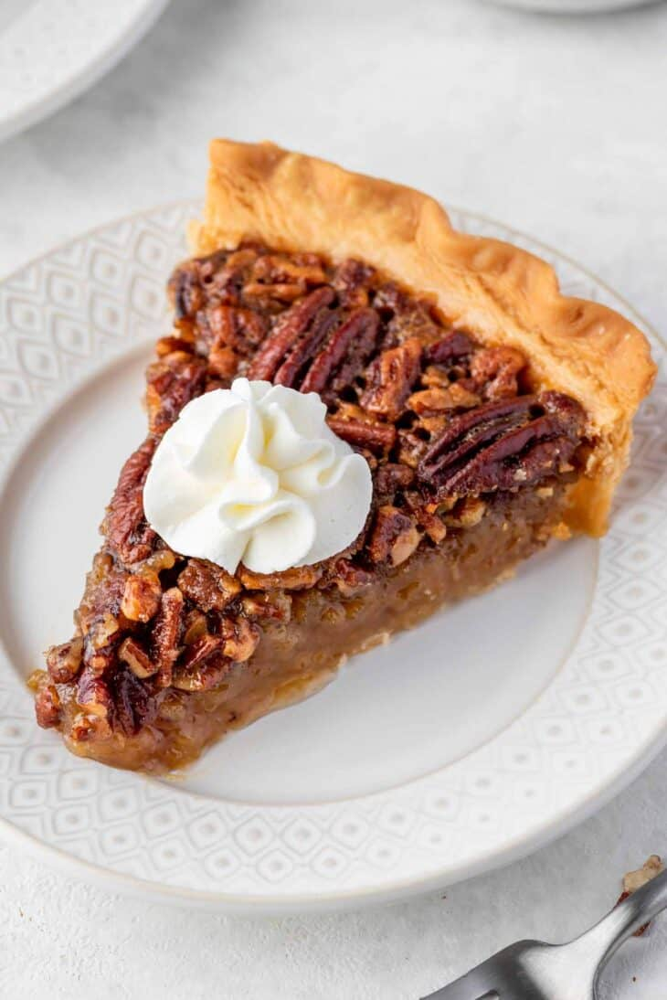

Pecan Pie

Pecan Pie History
Pecan pie is thought of as a Southern U.S. food, likely because pecans grow so abundantly in the southern states,
and are a native crop to North America. Baking recipes including pecans were seen in papers and cookbooks
starting in the 1870’s.
The recipe for pecan pie as we know it now was likely created by the makers of Karo Syrup. Their product is one
of the main ingredients in pecan pie and so it makes sense that they would publish and market a recipe like this
one. Since then, pecan pie has become an American staple at Thanksgivings all across the country.
Ingredients
- 1 single pie crust
- 3 eggs at room temperature
- 3/4 cup granulated sugar
- 1/4 cup brown sugar
- 1/2 tablespoon salt
- 1 tablespoon pure vanilla extract
- 1 cup light corn syrop
- 1/4 cup unsalted butter melted
- 1 cup chopped pecans
- 1/2 cup whole pecans
Steps
- Preheat the oven to 350°F/180°C.
- In a medium bowl, whisk the eggs.
- Add in granulated sugar, brown sugar, salt, vanilla extract, corn syrup, and melted butter. Whisk until well
combined.
- Gently transfer the unbaked pie crust to a 9-inch pie dish. Fold the edge under and crimp it. Use a fork to
prick holes in the bottom of the pie crust.
- Spread chopped pecans evenly over the bottom of the pie crust.
- Pour the filling over the pecans. Slowly the pecans will rise to the surface.
- Arrange the whole pecans in concentric circles over the wet mixture in a decorative way.
- Cover the pie with aluminum foil and bake for 30 minutes. After 30 minutes, uncover and continue baking
until the filling is completely set in the center, about 25-30 minutes.
- Once done, place the pie dish on a wire rack and allow the pie to rest for at least two hours before
slicing.
- Serve the pecan pie with whipped cream on top.